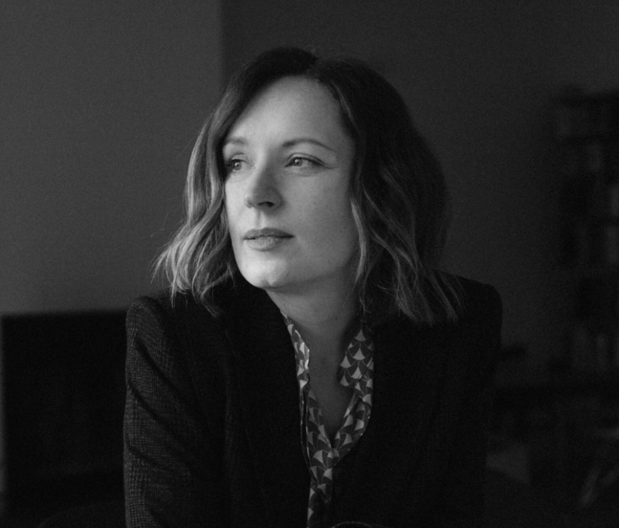

SCA Public Program: Paulina Pobocha
ABOUT THE CURATOR
Paulina Pobocha is an art historian, writer, and curator; she currently serves as Chair and Curator of Modern and Contemporary Art at The Art Institute of Chicago, where she most recently collaborated with artist Simone Leigh on Critical Fabulations, an exhibition which considers how museums assemble collections and establish organizational categories. Over the course of her career, Paulina has organized numerous exhibitions, among them the critically acclaimed retrospective of German sculptor Thomas Schütte for The Museum of Modern Art, New York (2024). Her curatorial endeavors include Guadalupe Maravilla: Luz y fuerza (2021); Constantin Brancusi Sculpture (2019); The Long Run (2017); Rachel Harrison: Perth Amboy (2016); Robert Gober: The Heart Is Not a Metaphor (2014); and Claes Oldenburg: The Street and The Store (2013). She holds a BA in art history from Johns Hopkins University and an M.Phil, also in art history, from the Institute of Fine Arts, New York University.
DINNER
After the lecture, SCA members are invited to join Paulina for dinner at Salon 61.